Una bitácora que acompaña sin estorbar.
Pulso es la app de un estudio de microsteps: cada día se abre y se cierra en un minuto, y lo que pasa se vuelve un espejo. Todo lo que ves aquí usa datos inventados.
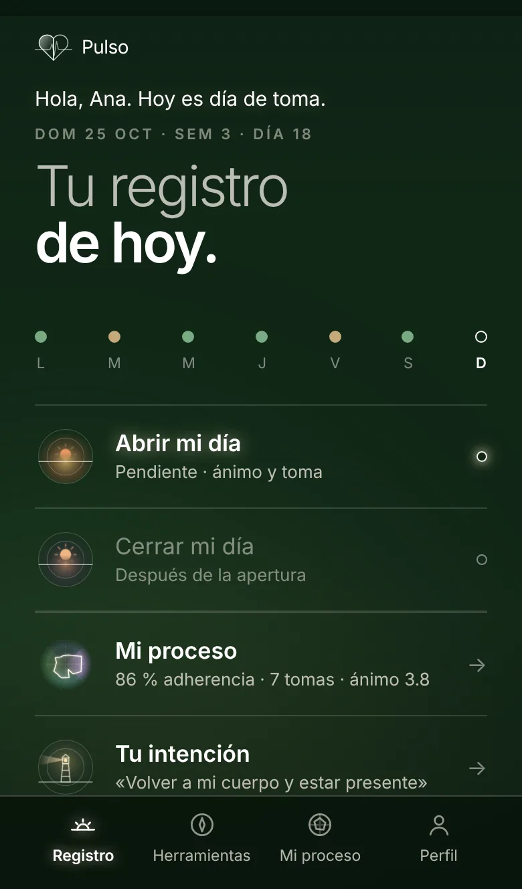
Abrir y cerrar el día.
Dos momentos, nada más. Antes de registrar, una respiración. En la mañana, cómo amaneciste; en la noche, cómo te fue.
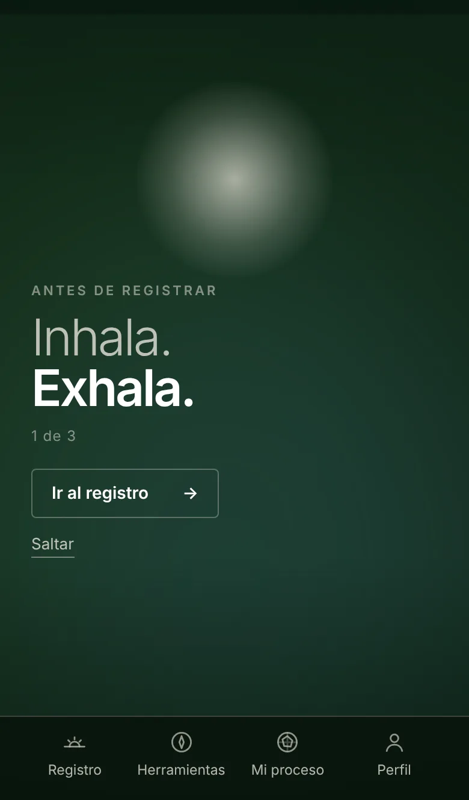
Tu semana como espejo.
Una telaraña en cuatro cuerpos: físico, emocional, cognitivo y espiritual. Se ve dónde empezaste, tu promedio y tu último día, sin juicios.
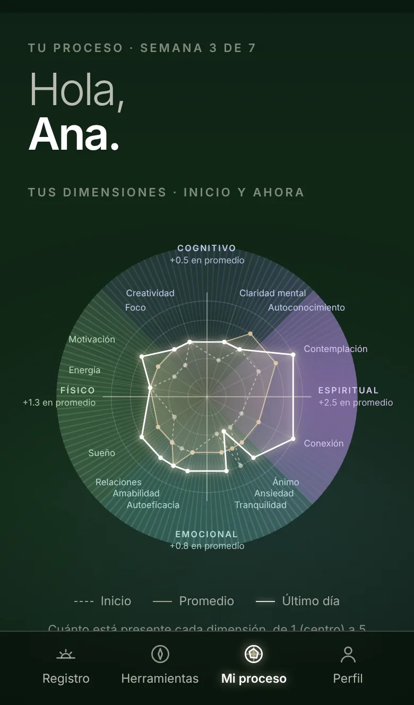
Lo que vive fuera del estudio.
Diario, Brújula y Mapa están ahí cuando los quieras. Lo que hagas en ellas no entra a tus datos.
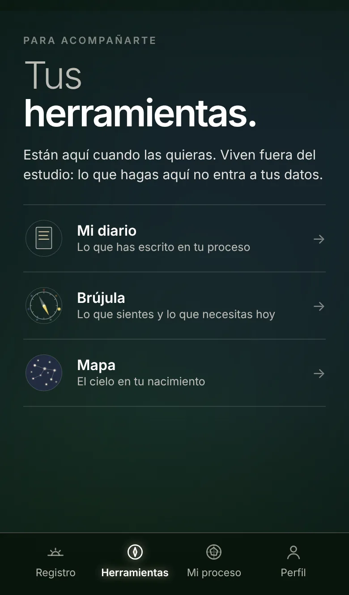
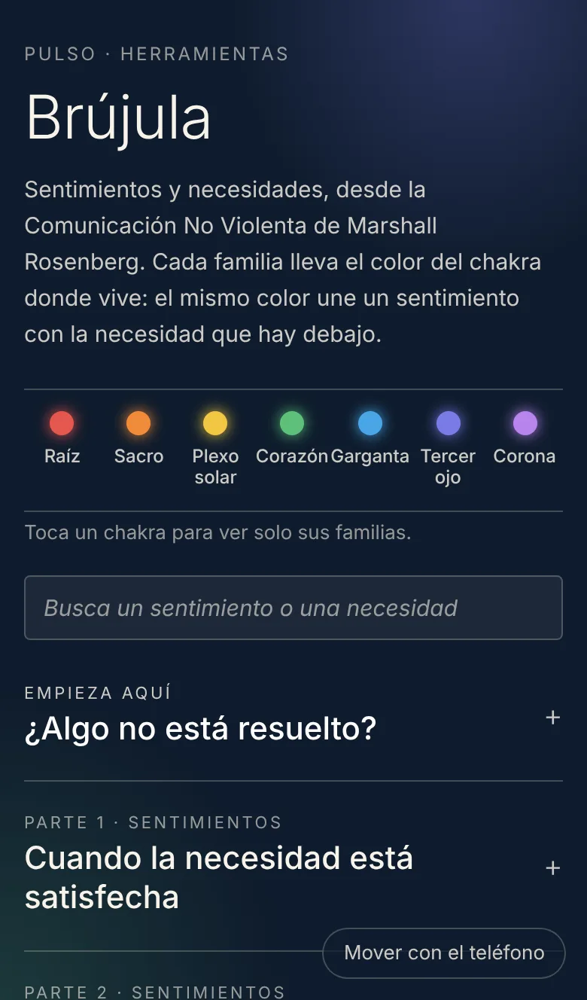
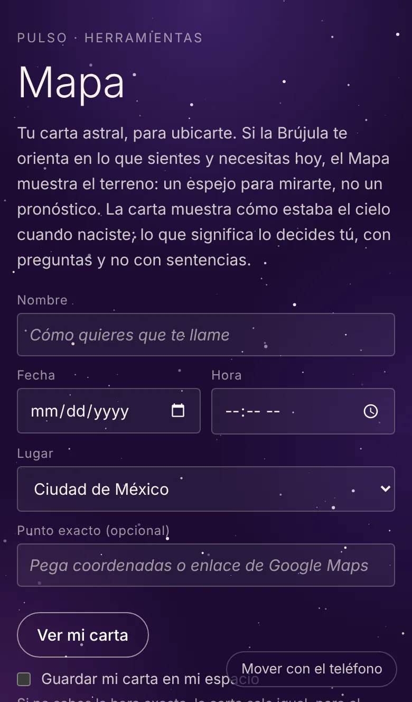
Algo se está murmurando.
microsteps comparte ciencia desde México. Lo presentamos como una murmuración: miles de aves que se mueven juntas porque cada una sigue a sus vecinas. Un carrusel abre la puerta y la página cuenta la historia.
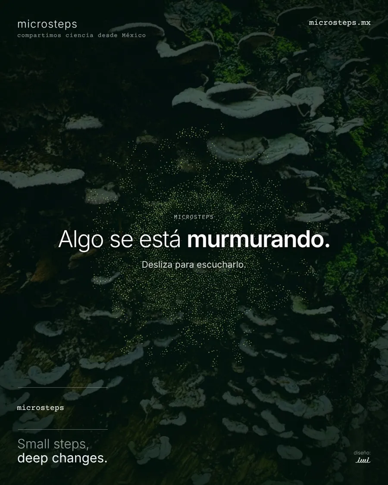
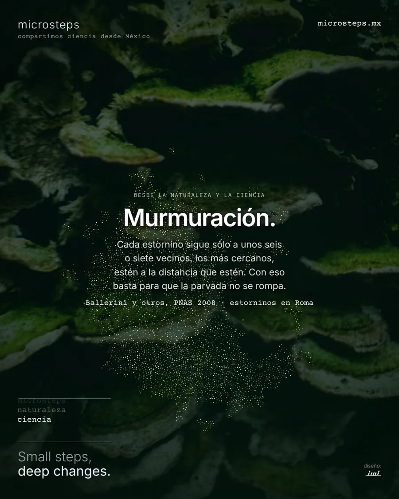
Murmura el pozo
15 s · 27 oct · para presentar microsteps
Pulso Diario, lanzamiento
62 s · 7 oct · v4, guion slide por slide; cuentas de prueba
Versión cálida
125 s · 8 oct · revisión 8: participante y guía
Primera muestra
15 s · 7 oct · movimiento y audio, la primera prueba
Así va hoy.
Sale del cerebro de iwi: las órdenes de esta línea y lo que cada agente entregó. Trabajando ahora: Micro.
El tablero pide tu cuenta de iwi.
Lo que se entregó.
- microsteps.mxfinal · autonomía
- Cápsula 00 · Qué es Microsteps (fotos)borrador · autonomía
- Cápsula 04 · Cortisol y melatoninaborrador · autonomía
- Sonido de las cápsulasborrador · autonomía
- Cápsula 00 · Qué es Microsteps (puntos y 7 lentes)borrador · autonomía
- Cápsula 05 · Descartes en líneasborrador · autonomía
- Substack 01 · Por qué microdosisborrador · autonomía
Cómo llegó aquí.
Versiones con fecha, desde la app beta de septiembre. Pulso es de Sístole y Diástole; Diseño y Micro le dieron cara.
- Pulso, app beta
La primera app para acompañar procesos: registro diario, línea base y la vista de quien guía.
- Video de lanzamiento
Guion slide por slide y 22 cuadros fieles a la app. Primera muestra de 15 s y el video final de 62 s.
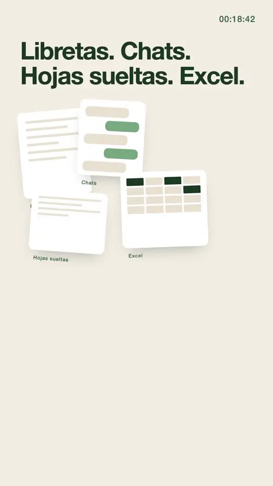
- La versión cálida
Ocho revisiones en dos días: apertura cálida, barras por rol y la secuencia de investigación.
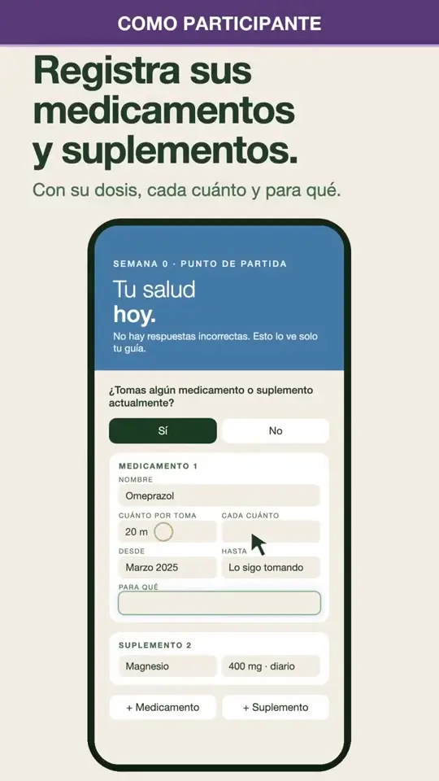
Del 25 oct al 26 oct.
- Primer prototipo
La app en pantallas sueltas: registro, ánimo, diario. Probamos fondos de aurora en verde y morado.
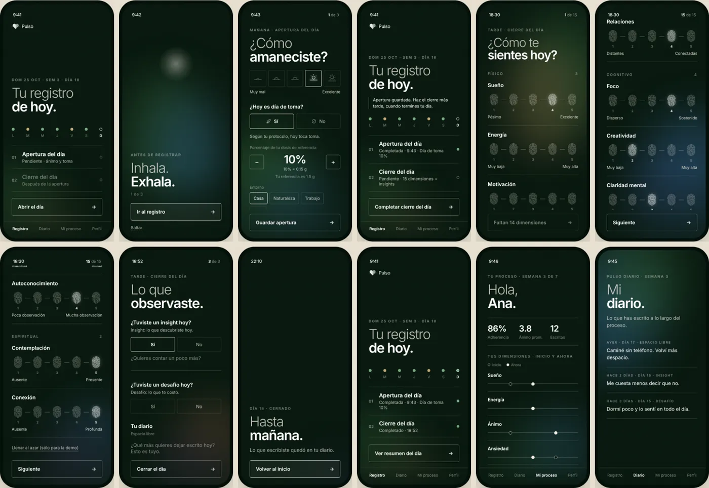
- Aurora y dimensiones
Cómo te sientes hoy, dimensión por dimensión, sobre una aurora que respira.
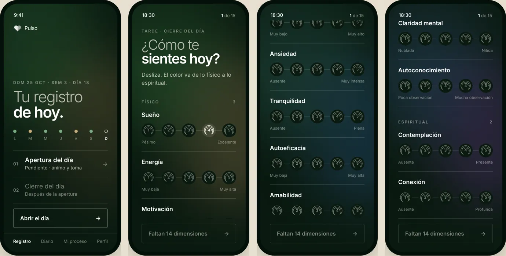
- microsteps.mx y el carrusel
La página que murmura y un carrusel de seis imágenes que manda a ella.
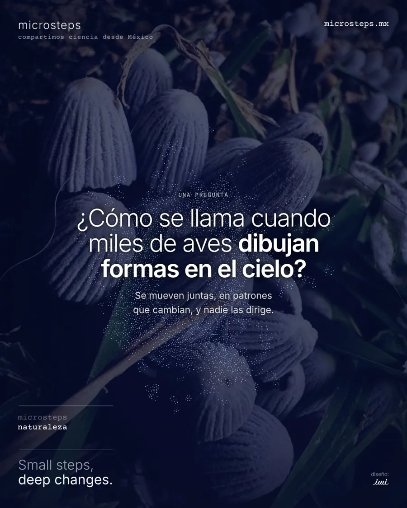
Del 27 oct al 31 oct.
- Video del pozo
Quince segundos de murmuración para abrir la conversación.
- Pulso como demo
Una app navegable con datos inventados, con la Brújula y el Mapa adentro.
- La telaraña
Mi proceso en cuatro cuerpos, orientada como una cruz, y un latido suave que también suena en iPhone.
Del 3 nov al 17 nov.
- Herramientas y Brújula de siete colores
Diario, Brújula y Mapa salen del inicio a su propio espacio; cada familia de la Brújula con el color de su chakra.
- Este micrositio
Todo junto en un solo lugar, como repositorio en exposición.